Generadas por tools/lcd-sim (480×320, el código real del firmware). Los datos son ficticios.
Español
Arranque: logo y versión (4 s)
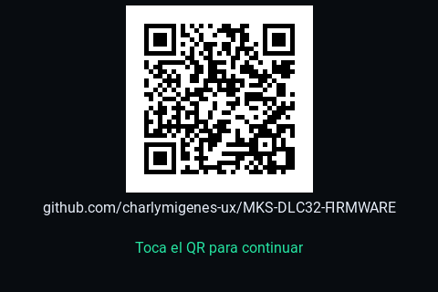
Arranque: mantener pulsado muestra el QR
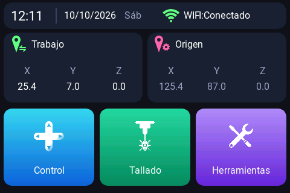
Pantalla principal
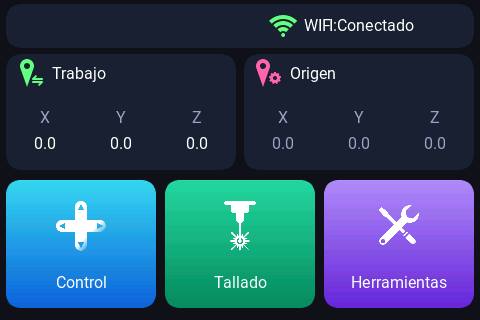
Principal sin hora sincronizada (sin reloj)Control
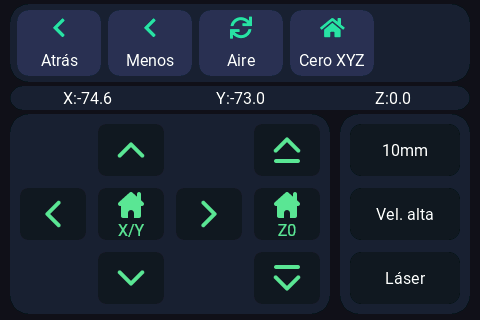
Control · cabecera, página 2Popup del láser
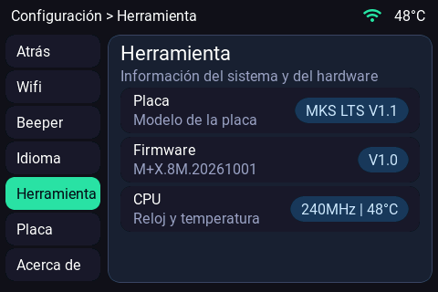
Láser al 30 % (el popup sigue abierto)Atrás con el láser encendido (lo apaga)
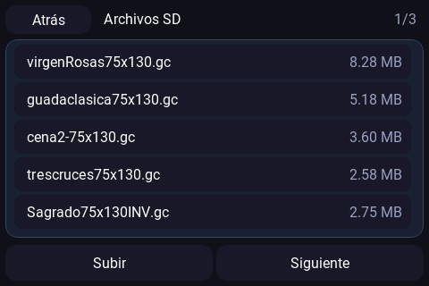
Archivos SD · página 1
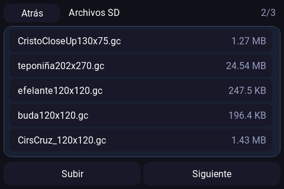
Archivos SD · página 2
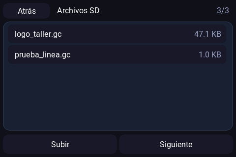
Archivos SD · página 3
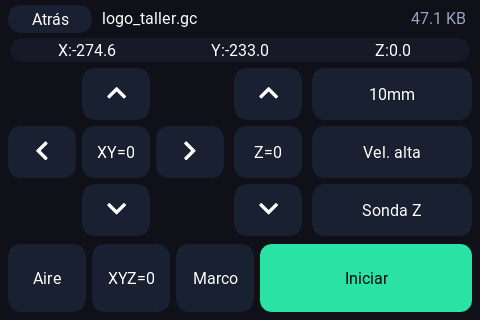
Posicionar el archivo
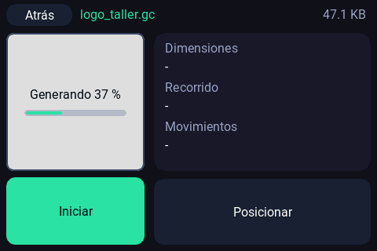
Vista previa (generándose)
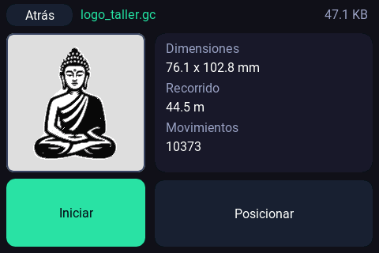
Vista previa del archivoConfiguración (al entrar)Configuración · Herramienta
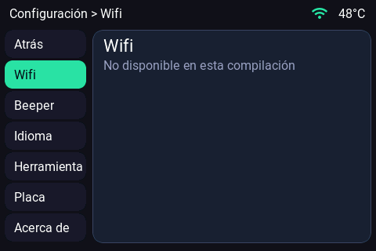
Configuración · Wifi
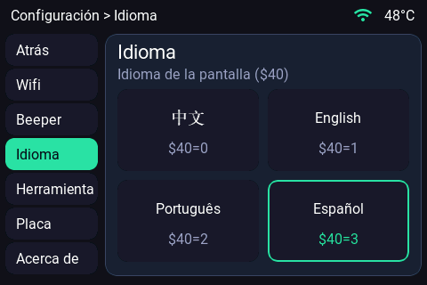
Configuración · IdiomaConfiguración · Beeper
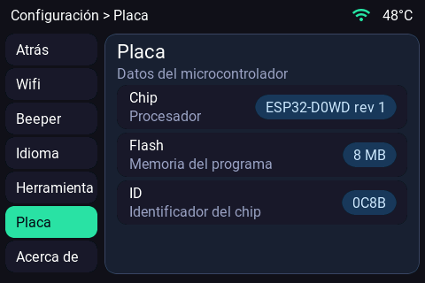
Configuración · Placa
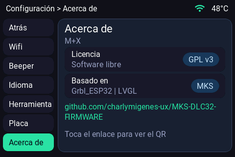
Configuración · Acerca de
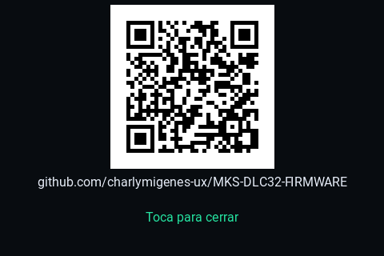
Acerca de: el enlace abre el QRTrabajo en curso
English
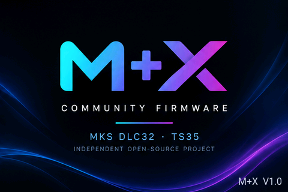
Arranque: logo y versión (4 s)Arranque: mantener pulsado muestra el QR
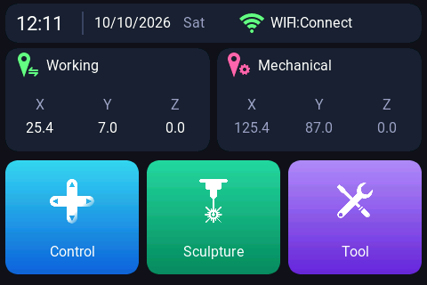
Pantalla principal
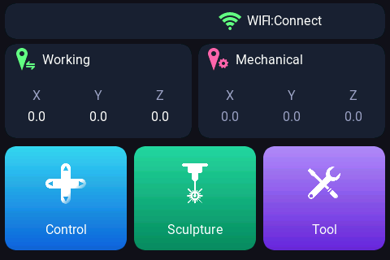
Principal sin hora sincronizada (sin reloj)
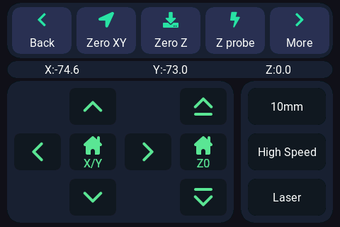
Control
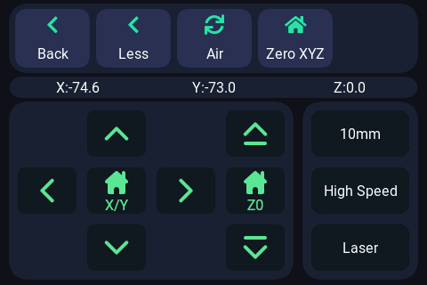
Control · cabecera, página 2Popup del láserLáser al 30 % (el popup sigue abierto)
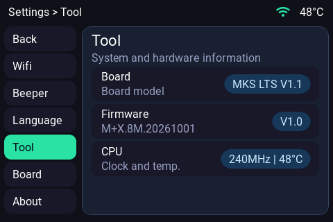
Atrás con el láser encendido (lo apaga)
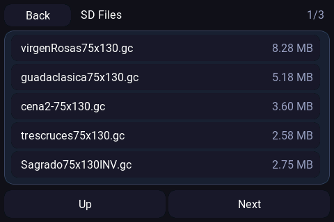
Archivos SD · página 1
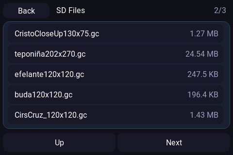
Archivos SD · página 2
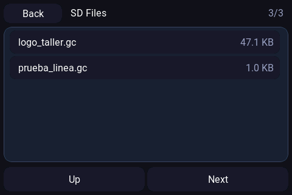
Archivos SD · página 3
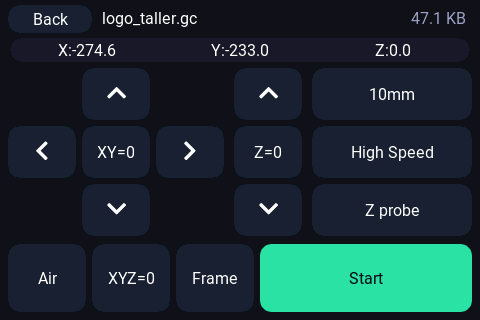
Posicionar el archivo
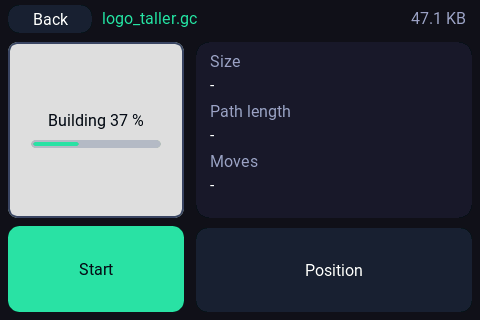
Vista previa (generándose)
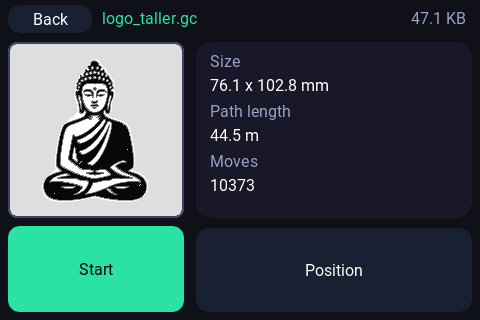
Vista previa del archivoConfiguración (al entrar)
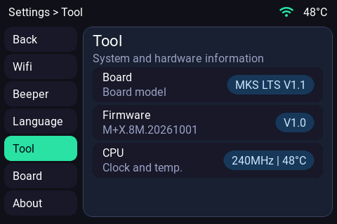
Configuración · Herramienta
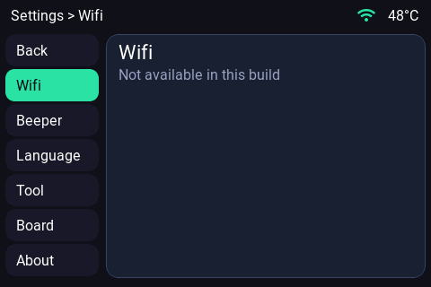
Configuración · Wifi
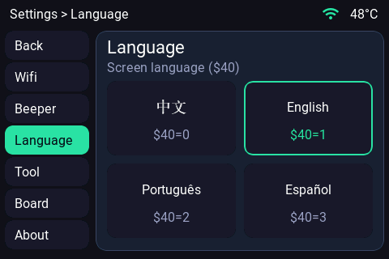
Configuración · Idioma
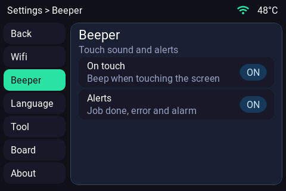
Configuración · Beeper
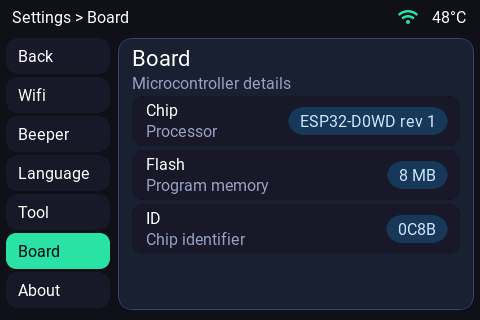
Configuración · Placa
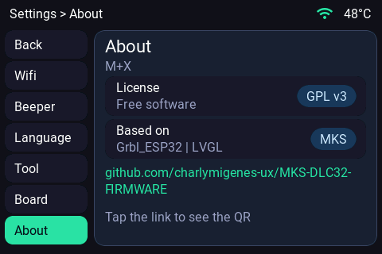
Configuración · Acerca de
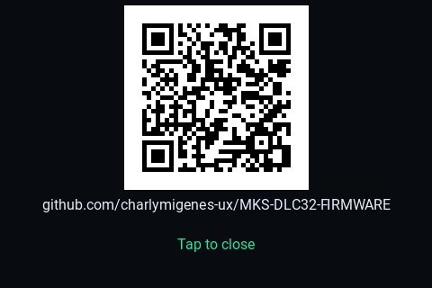
Acerca de: el enlace abre el QR
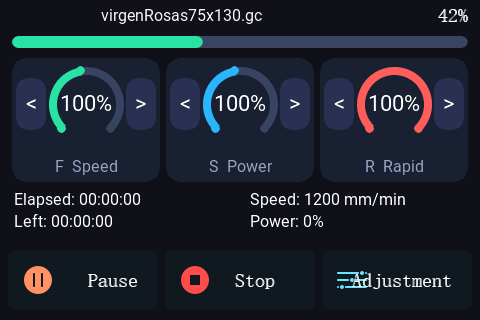
Trabajo en curso
中文
Arranque: logo y versión (4 s)
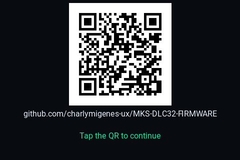
Arranque: mantener pulsado muestra el QR
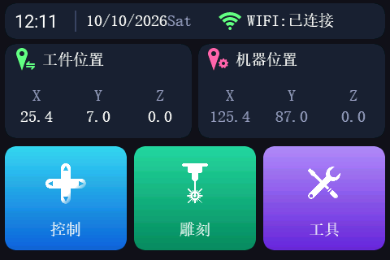
Pantalla principal
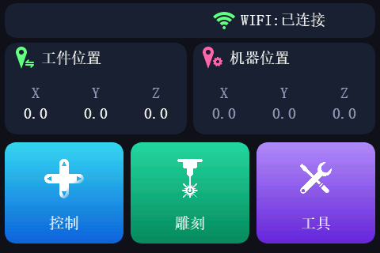
Principal sin hora sincronizada (sin reloj)
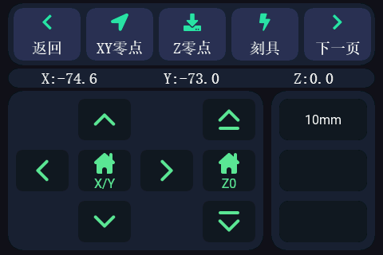
Control
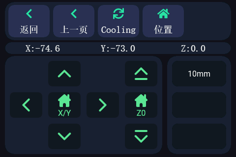
Control · cabecera, página 2Popup del láserLáser al 30 % (el popup sigue abierto)
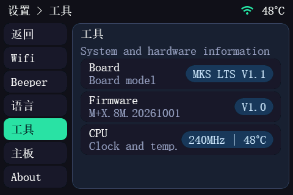
Atrás con el láser encendido (lo apaga)
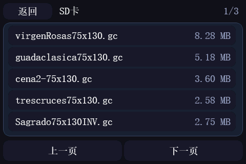
Archivos SD · página 1
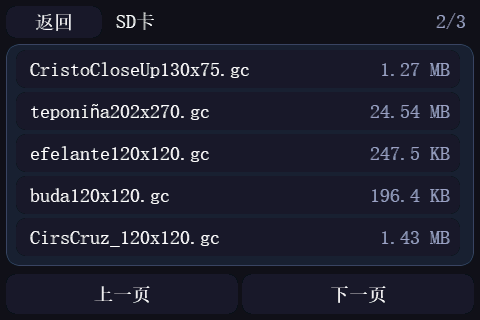
Archivos SD · página 2
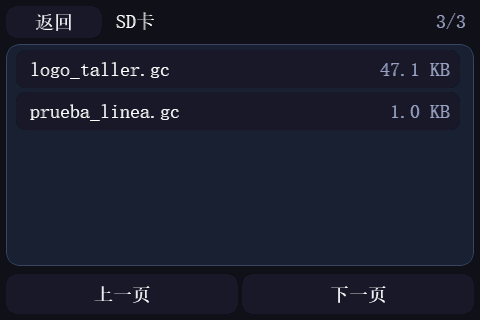
Archivos SD · página 3
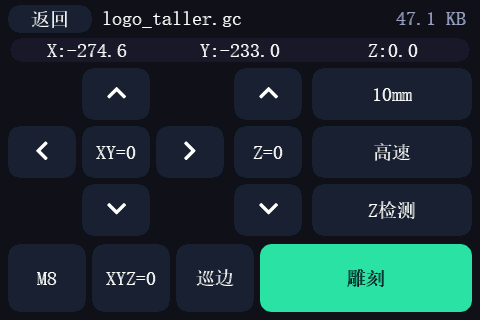
Posicionar el archivo
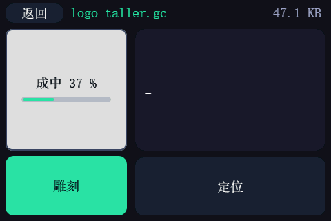
Vista previa (generándose)
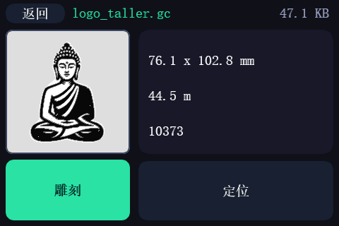
Vista previa del archivoConfiguración (al entrar)Configuración · Herramienta
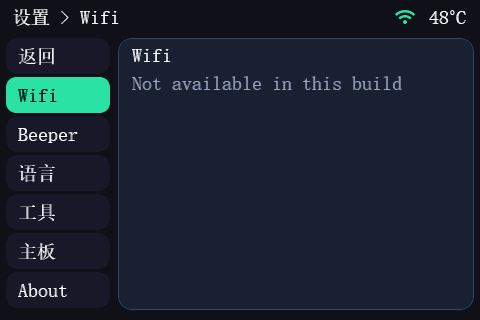
Configuración · Wifi
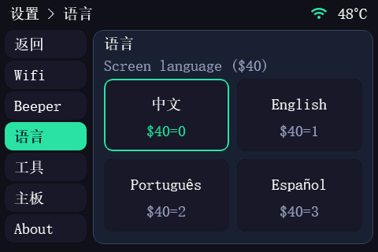
Configuración · IdiomaConfiguración · BeeperConfiguración · PlacaConfiguración · Acerca deAcerca de: el enlace abre el QRTrabajo en curso
Português
Arranque: logo y versión (4 s)Arranque: mantener pulsado muestra el QRPantalla principalPrincipal sin hora sincronizada (sin reloj)ControlControl · cabecera, página 2Popup del láserLáser al 30 % (el popup sigue abierto)Atrás con el láser encendido (lo apaga)Archivos SD · página 1Archivos SD · página 2Archivos SD · página 3Posicionar el archivoVista previa (generándose)Vista previa del archivoConfiguración (al entrar)Configuración · HerramientaConfiguración · WifiConfiguración · IdiomaConfiguración · BeeperConfiguración · PlacaConfiguración · Acerca deAcerca de: el enlace abre el QRTrabajo en curso